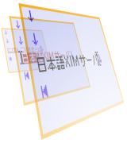

日本語XIMサーバ
日本語XIMサーバ

FreeBSD/LinuxのXFree86で動作するOn-The-Spot方式に対応した日本語XIM（X Input Method）サーバです。日本語変換システムとしてSJ3またはCannaを使用できます。
XIM仕様書に基づいてスクラッチから書いたものです（日本語入力用のXIMサーバとして有名なKinput2などの拡張版ではありません）。
Japanese XIM Server
This web page introduces an implementation of Japanese XIM (X Input Method) server supporting the On-The-Spot style, running with FreeBSD/Linux and XFree86. It requires SJ3 or Canna for a Kana-Kanji conversion system.
It is written from scratch based on the XIM specifications, not an extended version of something like Kinput2, which is the famous XIM server for Japanese input.